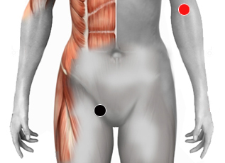

Trastornos articulares
Pares
nervio inigual (D) - articulaciones + Riñón (I)
articulación - Riñón (hl)

Generalidades:
Reumatismo monoarticular no infeccioso, causado por alguna lesión o exceso de tensión, no se debe a bacterias o virus. Ayuda a desinflamar articulaciones en proceso agudo.
La Artrosis es un daño en alguna articulación causado por desgaste o exceso de tensión produciendo inflamación, dolor y dificultad de movimiento. Las articulaciones que suelen presentarla son: cadera, vértebras cervicales o lumbares, rodillas, hombros, dedos de las manos o dedo gordo del pie. No confundirla con la artritis reumatoide que es una enfermedad crónico degenerativa. La artrosis empeora con el movimiento y se reducen los síntomas con el reposo.
Artritis reumatoide:
La artritis reumatoide es una enfermedad inflamatoria sistémica autoinmune, crónico-degenerativa, caracterizada por provocar una sinovitis (inflamación, desgaste y destrucción) persistente de las articulaciones, típicamente en manos, pies, muñecas, tobillos, rodillas, que se da en forma simétrica. Se presenta con más frecuencia en personas de la tercera edad, o de edad media. Los síntomas e inflamación avanzan lentamente; con el tiempo, generando distintos grados de deformidad e incapacidad funcional.